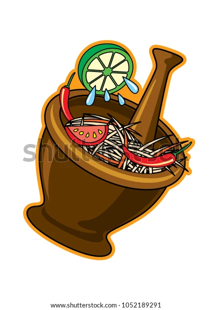

เกี่ยวกับเรา
รายละเอียดข้อมูลสินค้าหรือบริการจะปรากฏที่นี่
เป็นอาหารปรุงมาจากการทำตำส้ม คือการทำให้เปรี้ยวและเผ็ด ในลาวและอีสานจะเรียกว่าตำหมากหุ่ง ปรุงโดยนำมะละกอดิบที่สับแล้วฝานหรือขูดเป็นเส้นมาตำในครกเป็นหลัก พร้อมด้วยวัตถุดิบอื่น ๆ คือ มะเขือเทศลูกเล็ก มะเขือสีดา มะเขือเปราะ พริกสดหรือพริกแห้ง ถั่วฝักยาว กระเทียม และปรุงรสด้วยน้ำตาลปี๊บ น้ำปลา และมะนาว รวมถึงน้ำปลาร้า
รายละเอียดระดับการบริการ
ราคา
35-100บาท